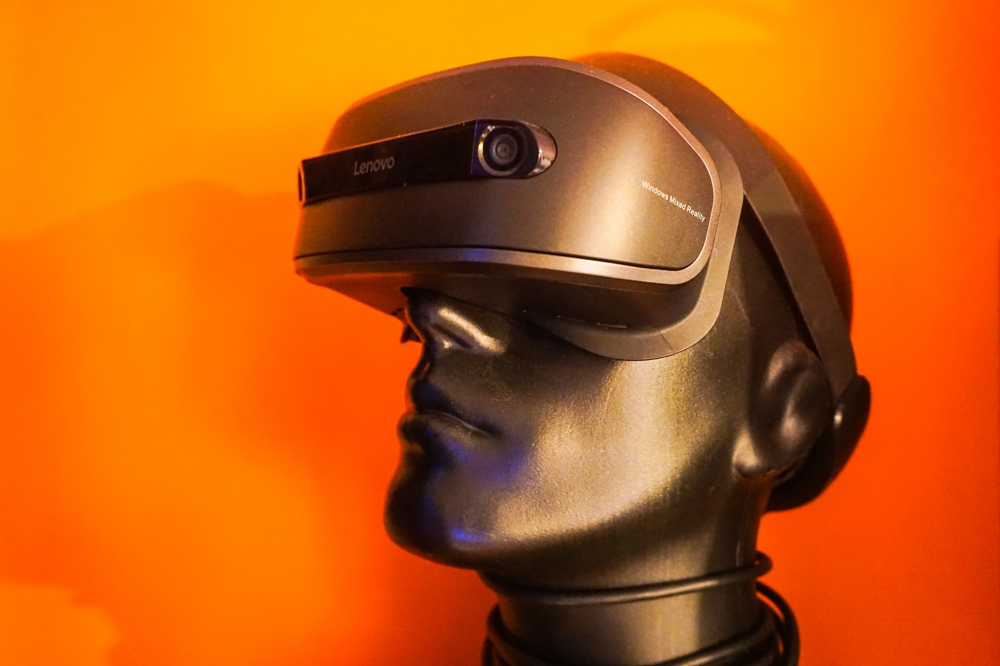
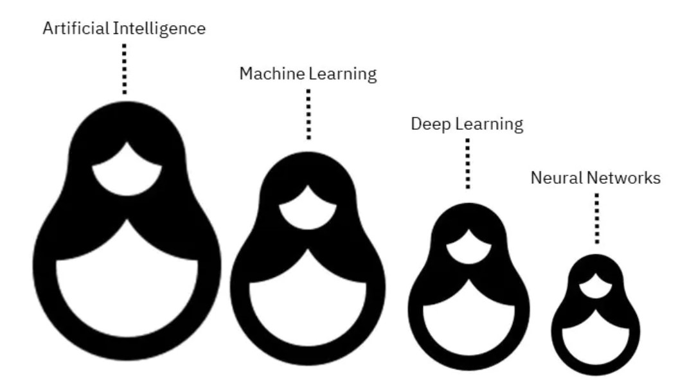
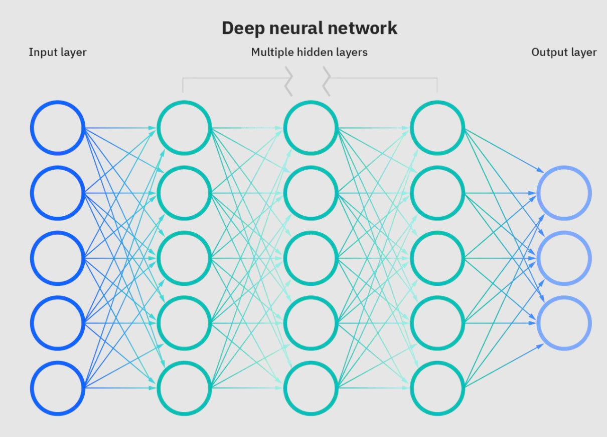

From Big and Weak to Small and Powerful: Artificial Intelligence
Within this blog’s conception, I found it was relevant to introduce the vast terminology and models concerning Data Science predictions and outcomes using Machine Learning (ML), a sub-field of Artificial Intelligence (AI). Like many concepts, defining AI and its many types and forms involves some paradoxical thinking. Given a plethora of terms and discussion between them, this post is about AI, AI concepts, methods and the future.
With this interchange of terms and definitions, the differences between AI and ML, between ML and Deep Learning (DL), between DL and Artificial Neural Networks (ANN), and between weak AI and strong AI is within the boundaries of the paradoxical picture.
Artificial Intelligence
 Photo by Liam Charmer on Unslash
According to IBM, in computer science terms, AI can be described as:
“Any human-like intelligence exhibited by a computer, robot, or other machine.”
On a widespread usage, AI refers to:
“The ability of a computer or machine to mimic the capabilities of the human mind—learning from examples and experience, recognizing objects, understanding and responding to language, making decisions, solving problems—and combining these and other capabilities to perform functions a human might perform, such as greeting a hotel guest or driving a car.”
Beyond the fictional idea given through the decades, AI is used in our lives today without us even noticing:
- Completing our words as we type them;
- Providing driving directions when we ask;
- Smartphones detecting faces while taking photos or unlocking themselves;
- Spam detection;
- Vacuuming our floors;
- Recommending what products or apps we should buy, be friends with or ads we may be interested in;
- Driving applications - such as in:
- Dynamic pricing in travel when we want to select a cab or book a vacation flight or vacation house;
- Medical image analysis, early diagnosis and cancer detection, recurrence and survival rate helping skilled professionals do essential work faster and with better success;
- Searching the web and using translation;
- Chatbots that help us with basic queries;
- Video surveillance and detecting financial fraud in keeping us safe;
- And many other applications.
This growth has been made possible by the advances in technology in ever-faster computer systems and more extensive storage systems, far exceeding human accuracy.
AI is being used to predict, automate, and optimize tasks that humans have historically done, such as speech and facial recognition, decision making, and translation. It simply is the most comprehensive term used to classify machines that mimic human intelligence. There are three types of AI, divided into two categories:
- Weak AI, also known as Narrow AI or Artificial Narrow Intelligence (ANI) and,
- Strong AI, divided into Artificial General Intelligence (AGI) and Artificial Super Intelligence (ASI).
Weak AI corresponds to the ability to perform a specific task, like reaching a location at a particular time, perform facial recognition or self-driving cars. Other examples include OpenAI, a virtual gamer that beats professional level game players or digital assistants, such as Apple’s Siri, Amazon’s Alexa, Google Assistant, Microsoft’s Cortana and Samsung’s Bixby.
Other impressive applications such as IBM Watson conquered human competitors on “Jeopardy” and Google’s DeepMind system winning the GO game with unexpected moves. Week AI is present in many fields in today’s technologies and is becoming common and sometimes essential in our daily lives.
As AI gets into stronger fields, it is defined by autonomously replicating the human brain. It may solve problems of different types and classes as it becomes able to choose which ones it wants to solve without human intervention. Chatbots, and virtual assistance, like Siri or Alexa, are still at the top end of week AI.
Incorporating the human ability to detect and act upon human tone and emotion is part of AGI and ASI. Efforts have been made to develop a house assistance robot with a personality that can identify specific users and tailor to their individual preferences and needs, and anticipate them.
At this time, strong AI is only theoretical if we compare AGI to humans and ASI beyond human intelligence and capabilities. With the evolving research and corresponding with fictional examples, ASI can be best portrayed as the supercomputers “HAL “from the film “2001 Space Odissey”, “Dolores” on the HBO show “Westworld”, or even the robots “TARS” and “CASE” in the movie “Interstellar”.
Machine Learning
 Photo by Chris Ried on Unsplash
Photo by Chris Ried on Unsplash
In Data Science, the ML process goes from the data selection and processing phase to applying data-driven algorithms that may be used in software applications and become highly accurate in predicting outcomes without explicit programming.
In its basic form, the processes involved in developing these algorithms are similar to predictive modelling and data mining since they receive input data and leverage statistical models to predict an output while updating outputs as new data becomes available. Both search through the data to identify patterns and adjust the program accordingly. The difference and mainly the hope is that:
Automated techniques (provided by machine learning) may be able to figure out meaningful patterns (or hypotheses) that the human observer may have missed.
ML is a branch of AI that learns by itself. Although ML is not automating intelligent behaviour, it uses computational technology to complement human intelligence and capabilities. It can reprogram itself as it absorbs more data to perform the specific task it is designed to function with increasingly greater accuracy.
Within AI and ML, there are five approaches based on whether or not the models are trained with human supervision: Supervised Learning, Unsupervised Learning, Reinforced Learning and DL. These approaches are further detailed as follows:
-
Supervised Learning: uses labelled datasets to train the algorithms that classify data or predict outcomes accurately. It can be separated into two types of problems - classification and regression:
-
Classification uses an algorithm to assign test data into specific categories accurately. Standard classification algorithms include: Linear Classifiers, k-Nearest Neighbor, Support Vector Machines, Decision Trees, Random Forest and Neural Networks. Example: image and object recognition and customer sentiment analysis.
-
Regression is used to understand the relationship between dependent and independent variables. It is commonly used to make projections. Linear Regression, Logistical Regression, and Polynomial Regression are standard regression algorithms. Examples: Predictive analytics, for instance, in sales, profits.
-
Examples of Supervised Learning used in both classification and regression include Gradient Boosting Machines and XGBoost.
-
-
Unsupervised Learning: uses algorithms to analyze and cluster unlabelled datasets. Algorithms group the data in an unlabeled dataset based on the underlying hidden features in the data. Algorithms are used for three main tasks: clustering, association, and dimensionality reduction:
-
Clustering algorithms: Clustering focuses on identifying groups of similar records and labelling the records according to the group to which they belong. This is accomplished without prior knowledge about the groups and their characteristics. Clustering algorithms can be categorized into a few categories: exclusive, overlapping, hierarchical, and probabilistic. Types of clustering algorithms include K-means Clustering, Hierarchical Cluster Analysis (HCA), Expectation-Maximization.
-
Association algorithms: or Association Rule Learning finds patterns and relationships in large amounts of data and identify frequent ‘if-then’ relationships called association rules. These are similar to the rules used in data mining. Association algorithms are used by companies for market basket analysis and better understand relationships between different products. Models include Apriori and Eclat.
-
Visualization and Dimensionality Reduction: larger datasets and many features included can sometimes yield better results. It can also create “overfitting” and make it challenging to visualize datasets. Dimensionality reduction is a technique used when the number of features, or dimensions, in a given dataset is too high. It reduces the number of data inputs to a manageable size while also preserving the dataset’s integrity as much as possible. Using a dimensionality reduction algorithm before applying another ML algorithm will make it run faster. The data will take up less disk and memory space, and in some cases, it may also perform better. Examples of Dimensionality Reduction are:
- Linear methods: Principal Component Analysis (PCA), Singular Value Decomposition (SVD), Kernel PCA, Factor Analysis, Linear Discriminant Analysis (LDA);
- Non-linear methods: Multi-Dimensional Scaling (MDS), Isometric Feature Mapping (Isomap), Hessian Eigenmapping (HLLE), Locally-Linear Embedding (LLE), Spectral Embedding (Laplacian Eigenmaps), t-distributed Stochastic Neighbor Embedding (t-SNE), and
- Autoencoders.
-
-
Semi-Supervised Learning: is between both worlds. This type of model uses a smaller labelled dataset to guide classification and feature extraction from a larger, *unlabelled dataset * during training. It is less costly with large datasets with a small labelled component. An example, Deep Belief Networks (DBN) are based on unsupervised components called Restricted Boltzmann Machines (RBM) stacked on top of one another. RBM are trained sequentially in an unsupervised manner, and then the whole system is fine-tuned using supervised learning techniques.
-
Reinforced Learning: it separates from Supervised Learning since the data is not trained using sample training data. It learns as it goes by using trial and error, being more behavioural. A sequence of successful outcomes will be reinforced to develop the best recommendation or policy for a given problem. Reinforcement Learning (RL) algorithms have been implemented into robots to learn how to walk. In this learning approach, a model has a particular meaning: it refers to different dynamic states of an environment and how these states lead to a reward. RL systems can make decisions in one of two ways:
- Model-based approach: requires constructing a model of the world used by a system to ask questions of the form “what will happen if I do x?” to choose the best x. This type of RL tends to emphasize planning.
- Model-free approach: the modelling step and the environmental information are bypassed altogether, favouring learning a control policy directly or determining what action to take given a specific state. As such, the model-free approach tends to emphasize learning.
-
Deep Learning: is typically unsupervised or semi-supervised. RL models can also be DL models. It defines an ANN that is designed to learn the way the human brain learns. These models require large amounts of data that pass through multiple layers of calculations, applying weights and biases in each successive layer to adjust and improve outcomes continually.
The most critical advances in AI are coming from DL and Reinforced DL with the use of ANN, including Convolutional Neural Networks (CNN) and Recurrent Neural Networks (RNN), in areas such as computer vision, natural language processing (including speech recognition and tone recognition), and self-driving cars.
The Machine Learning Process
Photo by Annie Spratt on Unsplash
The process of building a ML application involves four basic steps:
- Select and prepare the dataset;
- Choose the algorithm to run on the training data set;
- Training the algorithm to create the model and;
- Using and improving the model.
Select and prepare the dataset
The first step encompasses the definition of the problem and creating a viable business or application hypothesis with potential features for the model. The collection and preparation of the dataset are performed so that the data represents the ML model that will be used to predict or classify the problem at hand.
The data can be labelled to identify features and classifications that a supervised model will need to identify or unlabelled where an unsupervised model will need to extract the features and classify the data on its own. The process of collecting, transforming, cleaning and storing the data requires most of the work in the ML process. This step is generally accomplished by a Data Engineer, which may automate the process of selecting and preparing the data by using a pipeline.
Choose the algorithm to run on the training dataset
The second step is where the algorithm is chosen based on the initial definition and data processing. As we have seen, the models can be within these five approaches: Supervised Learning, Unsupervised Learning, Reinforced Learning and Deep Learning.
The choice depends on the data type, the training set’s amount of data and the kind and objective of the application. SciKit-Learn, one of the libraries of ML for python, provides a map to choose the suitable estimator on each case. In many cases, more than one algorithm is selected within the same approach and used in the following step to evaluate which model and which parameters are better for the application.
Training the algorithm to create the model
Training the algorithm is a step that involves an iterative process. The dataset is divided into training and testing data sets, the latter for final validation and accuracy assessment. Variables are run through the algorithm to compare the output of the model with the test data set.
Generally, parameters are adjusted to yield a more accurate result, and variables are rerun until the algorithm returns the precise outcome. The model and the most accurately tested set of parameters of the trained algorithm are selected and used as the ML model for the application or problem being solved.
As previously mentioned, more than one algorithm may be tested, each with its own set of parameters, weights or biases and advantages. The Data Scientist job is to choose the best model, which may include more than one algorithm.
Like the Data Engineer in the first step, the Data Scientist may also automate this process by developing a pipeline and remove the need to test every parameter and algorithm manually. The Data Scientist generally creates a pipeline to process the ML modelling and deployment automatically.
Using and improving the model
With the ML model chosen, the final step is to use it with new data. The objective is to use the receiving new data to interact with the model and adjusting it to improve its accuracy and effectiveness. The way the new data is received depends on how it was obtained and the type of application. When steps one to three are prepared using pipelines, the new data is automatically received, treated, stored, modelled, and parameters adjusted based on the incoming information, improving the model.
Artificial Intelligence vs. Machine Learning vs. Deep Learning vs. Artificial Neural Networks
 Photo by Sajad Nori on Unsplash
Photo by Sajad Nori on Unsplash
The confusion about AI, ML, DL and ANN is common. The differences between them can be seen as a Russian nesting doll, where:
- Machine Learning is a subset of Artificial Intelligence,
- Deep Learning is a subset of Machine Learning and,
- Artificial Neural Networks are a subset of Deep Learning.
 Illustration by Eda Kavlakoglu
Artificial Intelligence may be considered anything technologically remotely resembling human intelligence, and as seen in the first section, it can be divided into weak and strong AI.
Machine Learning is a subset of AI that learns by itself. In the ML process, it is possible to reprogram itself. As it receives more data, it performs the objective it is designed to execute, resulting in increasingly greater accuracy and effectiveness. The level of human intervention in the ML process defines the strongness of AI.
Deep Learning is a subset of ML application that teaches itself to perform a specific task with increasingly greater accuracy, without human intervention. We can say that all DL is ML, but not all ML is DL. DL models are typically unsupervised or semi-supervised. RL models can also be DL models.
Artificial Neural Networks mimic the human brain through a set of algorithms. At a basic level, a neural network is comprised of four main components: inputs, weights, a bias or threshold, and an output. The difference between DL and ANN is the “Deep” in Deep Learning, which refers to the depth of layers in a neural network, usually with more than three layers.
 Illustration by IBM Cloud Education
Specific types of DL models such as Convolutional Neural Networks (CNN) and Recurrent Neural Networks (RNN) are the progress today in areas such as computer vision, natural language processing (including speech recognition and sentiment analysis), recommendation engine (real-time recommendations) and self-driving cars (auto-pilot technology).
Concluding Remarks
AI can be defined as “any human-like intelligence exhibited by a computer, robot, or other machine”.
Beyond the fictional idea given through the decades, AI is used in our lives today without us even noticing in many applications.
This growth has been made possible by the advances in technology in ever-faster computer systems and more extensive storage systems. AI is being used to predict, automate, and optimize tasks that humans have historically done. There are three types of AI, divided into two categories:
- Weak AI, also known as Narrow AI or Artificial Narrow Intelligence (ANI), corresponds to the ability to perform a specific task, like reaching a location at a particular time, performing facial recognition, self-driving cars or digital assistances.
- Strong AI, divided into Artificial General Intelligence (AGI) and Artificial Super Intelligence (ASI) is defined by autonomously replicating the human brain. At this time, strong AI is only theoretical if we compare AGI to humans and ASI beyond human intelligence and capabilities.
In Data Science, the ML process goes from the data selection and processing phase to applying data-driven algorithms that may be used in software applications and become highly accurate in predicting outcomes without explicit programming. Within AI and ML:
-
There are five approaches based on whether or not the models are trained with human supervision:
- Supervised Learning,
- Unsupervised Learning,
- Reinforced Learning and,
- Deep Learning.
-
The process of building a ML application involves four basic steps:
- Select and prepare the dataset;
- Choose the algorithm to run on the training data set;
- Training the algorithm to create the model and;
- Using and improving the model.
-
Data Engineers and Data Scientists may automate the ML process using pipelines.
The differences between AI, ML, DL and ANN, can be interpreted as a Russian nesting doll, where:
- Machine Learning is a subset of Artificial Intelligence,
- Deep Learning is a subset of Machine Learning and,
- Artificial Neural Networks are a subset of Deep Learning.
Specific types of DL models such as Convolutional Neural Networks (CNN) and Recurrent Neural Networks (RNN) are the progressing models today in computer vision, natural language processing, recommendation engines and self-driving cars.
This connection and conceptual grasp between AI, ML, DL and ANN make these fields intrinsically paradoxical:
- The big and week AI is driven by the small and powerful ANN.
- In turn, ANN can be developed and scaled to support the future of strong AI.
The black box concept of AI, with the shown habilities to transform by itself in the learning process and the possible role substitution in Data Science and many areas of our society, are premisses that need to be accounted for the ASI of the future.
These are pertinent facets in the development of AI that need more discussion and may question aspects of AI regulation.
In the light of AI's fast development, how do you feel and question the power of the future AI?
References
“Scikit-learn: in Machine Learning in Python”, Pedregosa et al., JMLR 12, pp. 2825-2830, 2011
“Understanding Machine Learning: From Theory to Algorithms”, Shai Shalev-Shwartz and Shai Ben-David, Cambridge University Press, 2014
“Hands-On in Machine Learning with Scikit-Learn & TensorFlow”, Aurélien Géron, O’Reilly Media, Inc., California USA, 2017
“Emotech: Olly the Robot”, The Data Lab, August 8, 2018
“Can Artificial Intelligence replace Data Scientists?”, Pedro Uria-Recio, Sep 14, 2018
“Role of Data Science in Artificial Intelligence”, Karen Lin, Feb 19, 2019
“A beginner’s guide to dimensionality reduction in Machine Learning”, Judy T Raj, Mar 11, 2019
“AI vs. Machine Learning vs. Deep Learning vs. Neural Networks: What’s the Difference?”, Eda Kavlakoglu, IBM Cloud, May 27, 2020
“Artificial Intelligence (AI)”, IBM Cloud Education, June 3, 2020 “Machine Learning”, IBM Cloud Education, July 15, 2020
“Neural networks”, IBM Cloud Education, August 17, 2020 “Unsupervised Learning”, IBM Cloud Education, September 21, 2020
“Supervised vs. Unsupervised Learning: What’s the Difference?”, Julianna Delua, IBM Cloud, March 12, 2021
“Choosing the right estimator”, Scikit-learn.org. “ML Trends for Solving Business Intelligence Problems”, April 14, 2021
“Does The Popularity of AutoML Means the End of Data Science Jobs?”, Chirag Goyal, Analytics Vidhya, April 14, 2021